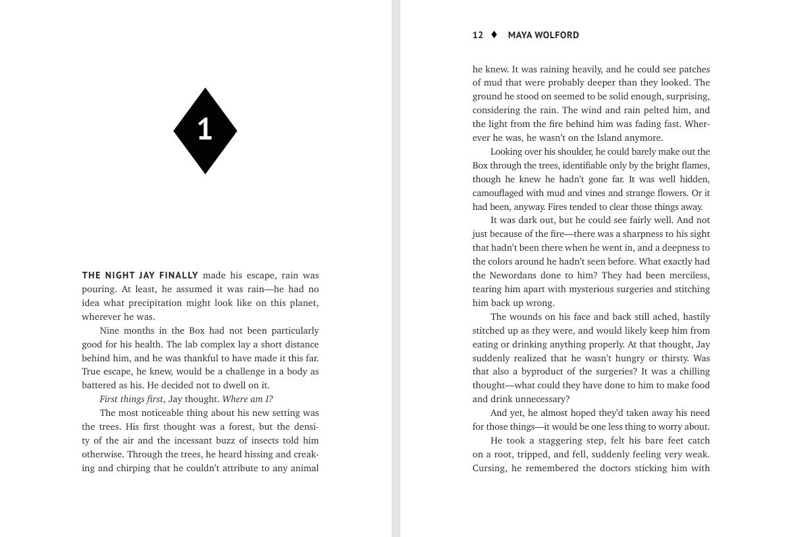
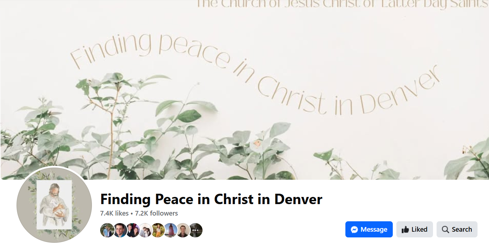

Editing Samples
The following two samples are proofreading work I did with a freelance copyeditor who edits clean middle-grade fantasy. The first piece had been line edited beforehand, and the second hadn’t. My job was just to do a final proofread, fix punctuation, and only make changes for clarity.
View the first document here. View the second document here.
This is a sample of a transcript I edited for the Come Back Podcast. My editing work here was unique because I was editing a podcast transcript that had been transcribed by AI to be sent to a translation team. My task was to clean up the document so they could efficiently translate the episodes into French and Spanish. I worked to preserve the speaker's message while also standardizing grammar and punctuation, adding tone/expression tags, removing filler words, and rewriting idioms to their literal meanings.
View these edits here.

This is an article I copyedited for a language and linguistics journal. This is the Winter 2023 issue that I worked on. I helped with all stages of production, but here I helped design the cover and place the figures in the journal.
View these edits here. View the completed journal here.
This was an article I edited for my nonfiction editing class. The content of the article was engaging and informative. My main goal was to edit it for cohesion and concision.
View these edits here.
This is a brief example of the type of copyediting I did at BYU Continuing Education. I typically checked for accuracy, proper citations, and clarity in the courses.
View these edits here.
Writing Samples

This is a sample article I wrote for The Friend magazine. It tells the true story of my experience recognizing the Spirit as a child and receiving the gift of the Holy Ghost. It is meant to teach children how they can recognize the Spirit in their lives, and represent children of part-member or convert families.
View the article here.

This is the manuscript for a brief children's book I wrote for a Book of Mormon class. It is about heroes from the Book of Mormon, and each person has a scripture, description, and application section. The goal of the book is for children ages 7–11 to gain experience reading scripture and ponder on how they can follow righteous examples.
View this sample here.
This is a 100-word social media teaser I wrote for the article "Walking to Church" from The Friend.
View the article here.
Design/Social Media Samples

This is a sample of a science fiction novel that my team and I worked with an author to edit, design, and print. My team and I collaborated to design the guts of this book and this was the design draft that came before the proofreading stage. We created and implemented this design in Adobe InDesign.
View this sample here.

This is just one post from a page that I managed as a social media leader in the Denver North mission. From October 19th to November 25th we ran a campaign about peace. We chose a calming, fall color palette and had missionaries in the area find people who would be willing to share how they felt peace. I wrote and edited many of the captions for these posts and aimed to keep them concise and uplifting.
View this sample here.